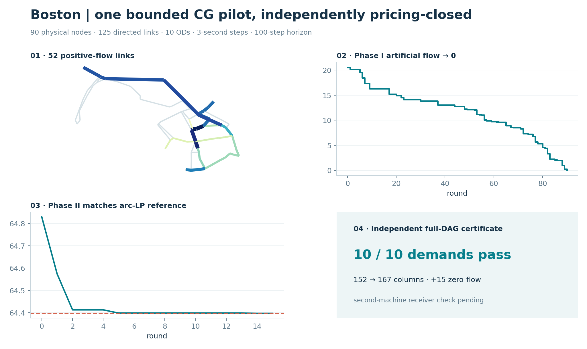
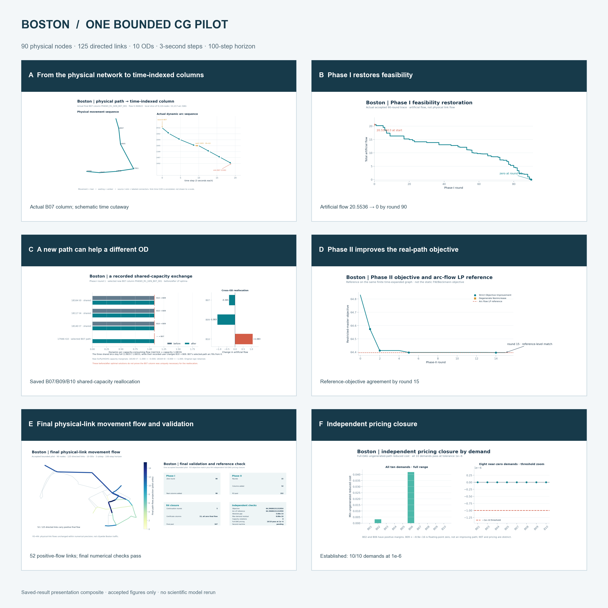
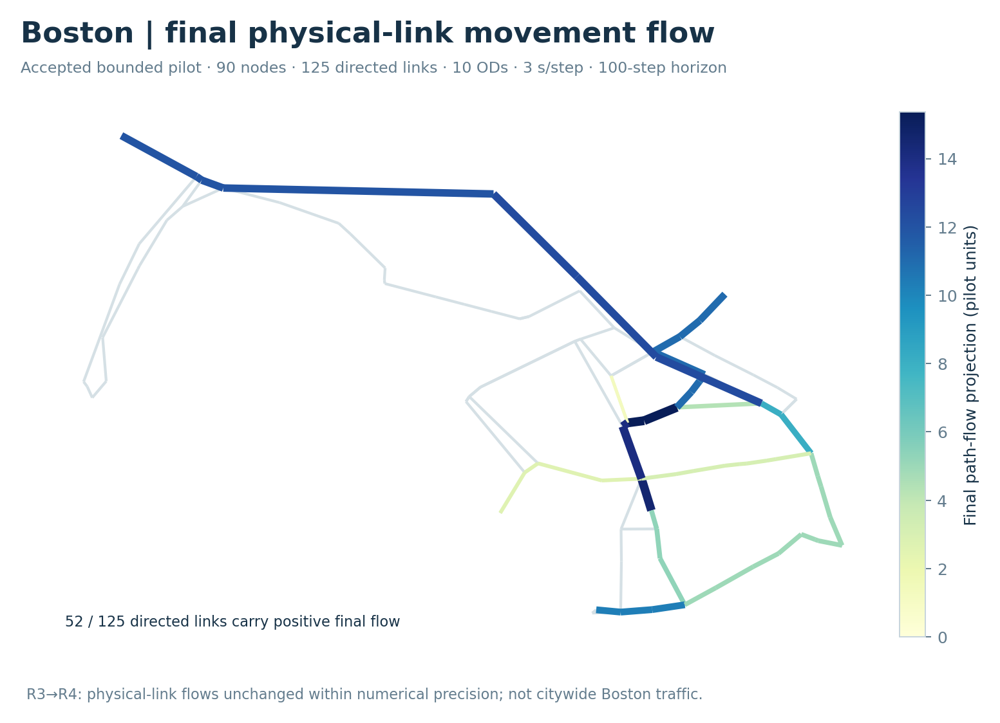
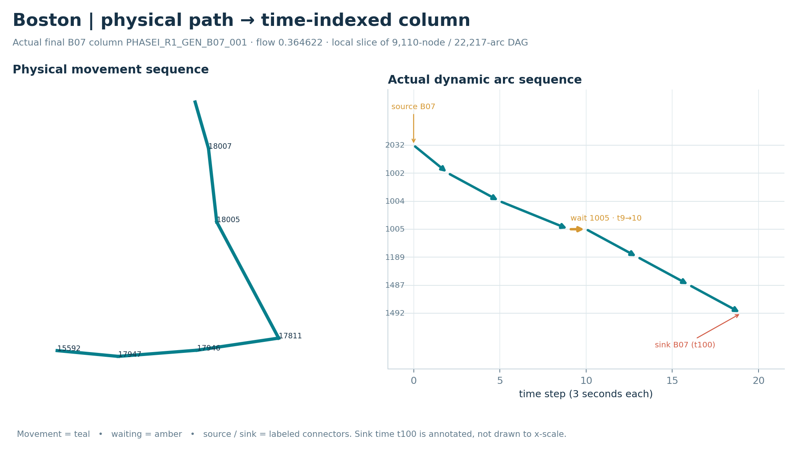
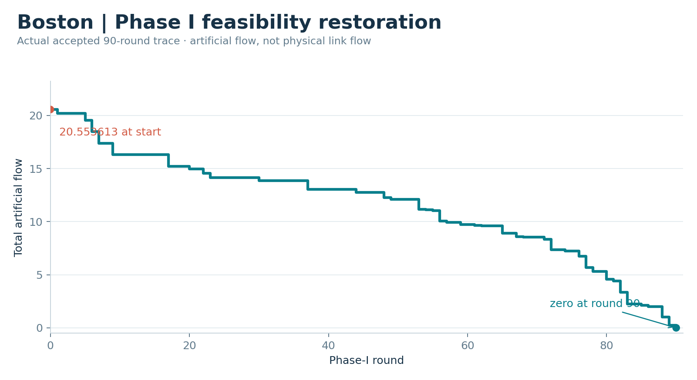
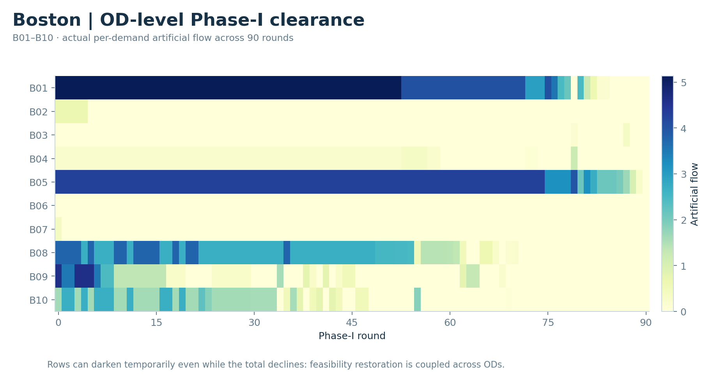
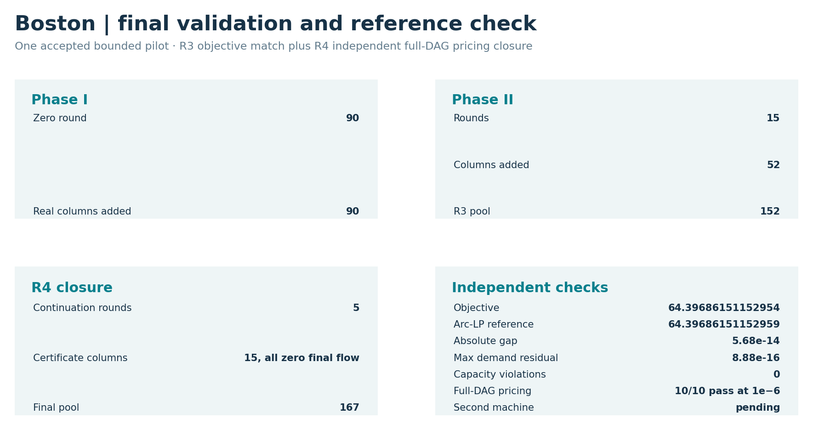
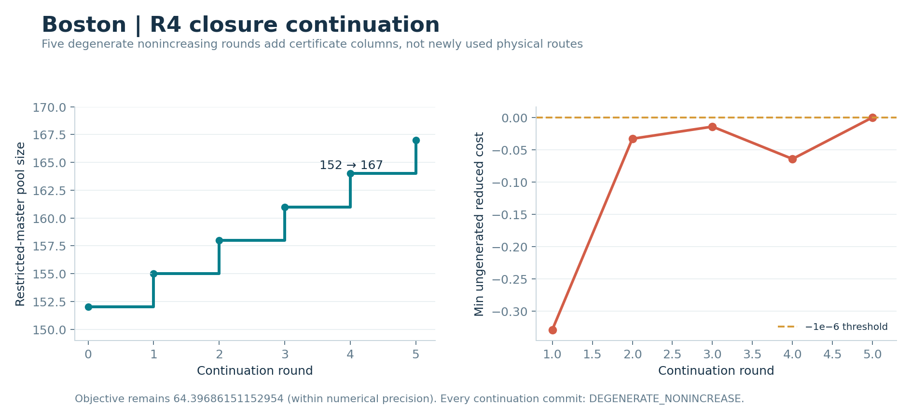
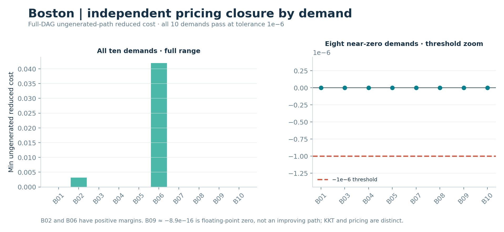

Boston · bounded finite space–time CG pilot
This page reports one accepted bounded Boston pilot, not a citywide assignment or a second Boston scale: 90 physical nodes, 125 directed physical links, 10 OD demands, 3-second time steps and a 100-step horizon. It solves a fixed-cost, hard-capacity flow problem on a finite time-expanded graph. Its objective and flows must not be compared numerically with Boston's separate static BPR/Beckmann FW and native-L3 instance, the semantic GPS feedback panel, or the Sioux Falls selected-OD benchmarks.

Single-instance summary. Of 125 directed physical links, 52 have positive final physical-link movement flow. Artificial flow reaches zero at Phase-I round 90. Phase II reaches the objective of the arc-flow LP on the same finite time-expanded graph. R4 independently checks full-DAG pricing for 10/10 demands; its 15 added certificate columns have zero final flow. Editable SVG · Plot inputs and figure hashes.
{kind=link}
Case scope
| Item | Boston bounded pilot |
|---|---|
| Physical nodes | 90 |
| Directed physical links | 125 |
| OD demands | 10 |
| Time step | 3 seconds |
| Horizon | 100 steps |
| Phase-I zero round | 90 |
| Final column pool after closure | 167 |
| Reference-objective agreement | Yes |
| Independent pricing closure | 10/10 demands at 1e-6 |

Saved-result visualization; no optimizer, pricing routine, demand model or map-matching routine was rerun for this public rendering. Editable-text SVG · Exact accepted source-asset hashes and no-solve renderer.
{kind=link}
1. From the physical network to time-indexed columns
| Physical pilot network and final movement flow | Actual physical-to-time construction cutaway |
|---|---|
 |  |
{kind=link}
{kind=link}
Physical network. Accepted R3 final path flow is joined by physical_link_id to accepted GMNS Plus 21_Boston geometry. The R4 closure continuation leaves the final physical-link movement flow unchanged within numerical precision. This is the 90-node/125-link pilot subnetwork, not all Boston traffic. Exact 125-link geometry/flow join.
Time-indexed column. Positive-flow final column PHASEI_R1_GEN_B07_001 goes from physical node 2032 through links 18007 → 18005 → 17811, waits at node 1005 from time 9 to 10, then uses 17946 → 17947 → 15592 to node 1492. Movement, waiting and demand-specific source/sink arcs have separate colors and labels. Physical IDs and time indices come from the published selected column, dynamic arcs and dynamic nodes; display coordinates are schematic. The sink at t100 is annotated rather than drawn to x-scale. This is a local cutaway, not the full 9,110-node/22,217-arc time-expanded graph.
2. Phase I restores feasibility
| Total artificial flow, all 90 rounds | OD-level artificial-flow clearance, B01–B10 |
|---|---|
 |  |
{kind=link}
{kind=link}
The total-flow input starts at 20.55361289739253 and reaches zero in round 90. The chart is stepwise, with no smoothing. The per-demand input retains all B01–B10 values for rounds 0–90. A single demand's artificial flow can rise even while total artificial flow falls; this is shared-master feasibility reallocation, not a time series of observed queues.
3. A new path can help a different OD
{kind=link}
Phase-I round 1 selects new B07 column PHASEI_R1_GEN_B07_001. Its dynamic arc explicit_link_17946_t10 goes from zero to its 1.083333 capacity. Three other saturated arcs, explicit_link_18164_t0, 18117_t4 and 18140_t7, remain at 1.083333/1.083333 but change recorded user B10 → B09. B07 artificial flow changes −0.364622, B09 −1.083333, B10 +1.083333; total artificial flow falls by 0.364622. Raw SciPy/HiGHS capacity marginals retain their solver signs: 18140 t7 moves about −1 → 0, while 18164 t0 moves about 0 → −1. Before/after arc usage and duals · OD changes · Selected column.
These saved before/after restricted-master optima show a cross-OD capacity reallocation. They do not prove the selected B07 path was uniquely necessary for the exchange.
4. Phase II improves the real-path objective
{kind=link}
The accepted R3 round log projection starts from feasible objective 64.82967648341466 and reaches 64.39686151152952 after 15 rounds, with 52 added columns and 152 columns in the R3 pool. Strict-improvement and degenerate-nonincreasing commits use different markers. The dashed line is the objective of the arc-flow LP on the same finite time-expanded graph, not a static FW objective. Reference-objective agreement alone did not establish independent pricing closure; that separate R4 certificate appears below.
5. Final physical-link movement flow and validation

Editable SVG · Exact plot-input summary. The final R4 objective 64.39686151152954 and the arc-flow LP objective on the same finite time-expanded graph 64.3968615115296 differ by about 5.68×10⁻¹⁴. Maximum demand residual and capacity violation are each 8.88×10⁻¹⁶; the count of material capacity violations is zero. The accepted final physical-link movement flow is the 125-link view shown in Section 1. A second-machine receiver check is still pending.
{kind=link}
6. Independent pricing closure
| Five closure-continuation rounds | Independent by-demand pricing certificate |
|---|---|
 |  |
{kind=link}
{kind=link}
The R4 continuation trace records five DEGENERATE_NONINCREASE commits and final-column-pool growth 152 → 167. All 15 added certificate columns have zero final flow, and the objective remains 64.39686151152954 within numerical precision. The by-demand full-DAG check finds no ungenerated path with reduced cost below −1e−6 for B01–B10. Floating-point values near zero are not improving columns. Existing-column KKT/stationarity and ungenerated-path pricing closure are different checks.
7. Reproduction and limits
The public release contains projected, plot-ready accepted R2/R3/R4 values, selected real dynamic records and accepted GMNS geometry, not the full private input archives. Per-figure input names, captions and output hashes and accepted-source SHA-256 hashes allow audit without private absolute paths. The geometry source is GMNS Plus 21_Boston, commit 116447ab641cca1ed34797d019c8e704063393c3, Apache-2.0. No basemap or external web asset is embedded.
To redraw the PNG/SVG figures from the released plot inputs, run python -B tools/visuals/render_boston_cg_r4.py from the repository root with Python, NumPy, Matplotlib and Shapely available. Run python -B tools/visuals/check_boston_cg_r4.py for standard-library-only checks of public plot-input consistency, numerical summaries and figure hashes. These operations inspect or render saved results only; they do not run Phase I, Phase II, pricing, the reference LP, demand, GPS, FW or Sioux Falls models. The public plot inputs are the exact data used by the renderer. The 90-node pilot has no citywide calibration claim, no second Boston scale and no completed second-machine receiver check.
For the corresponding Sioux Falls figure families, see Sioux Falls finite space–time CG evidence. The Sioux Falls 200/250-OD records are feasible and have reference-objective agreement on their own selected-OD finite time-expanded graphs, but independent pricing closure has not been established there.